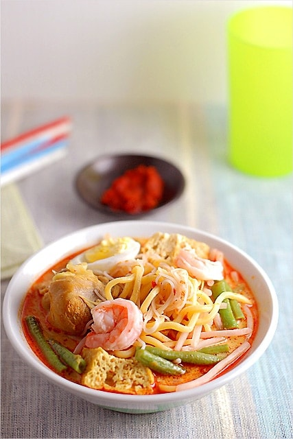

Mee Kari

Description
Mee Kari is a food loved by all Malaysians. Mee Kari directly translated to English is curry mee. It is often found at small hawker stalls that can be found in the streets of cities like Penang or Kuala Lumpur, or at the roadside of many main and small roads in Malaysia.
Mee Kari is egg noodles served in curry broth. Various vegetables, eggs, shredded chicken, fishballs and fried tofu are also added into the bowl with the noodle. Some versions even have prawns or cockles in them to give more variety in their taste. Whatever the version Mee Kari is, all I can say is that (and all Malaysians will agree with me), it is a dish that will leave you wanting for more!
Ingredients
Main Ingredients:
- 200g fried soya bean cubes (halved or quartered)
- 300g shredded, cooked chicken meat
- 300g blanched bean sprouts
- 200g shelled cockles
- 600g blanched yellow noodles
- 500ml of coconut milk
Seasonings:
- 2tbsp salt or to taste
- 1.5tbsp rock sugar
- 0.5tbsp MSG
Spices:
- 100g shallots
- 25g garlic
- 3tbsp coriander seeds
- 4tbsp chilli paste
- 2tbsp lemongrass
- 10 peppercorns
- 0.5tbsp shrimp paste or belacan
Steps
- Finely ground the spices. Add 0.5cup of oil to saute the spices until fragrant.
- Add in salt, rock sugar and 500ml of coconut milk until sugar dissolves. Add in fried soya bean cubes.
- When the curry boils, put in the rest of the ingredients in the curry to cook.